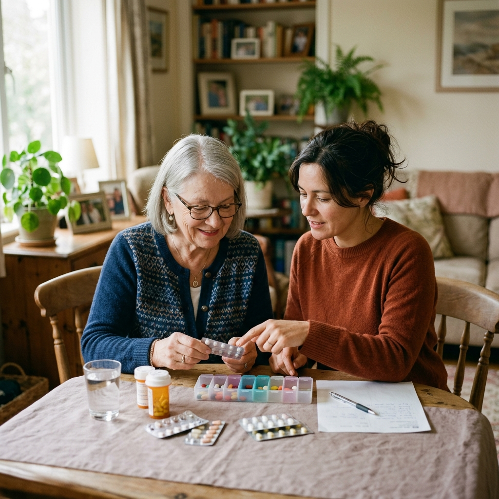

Gestiona tu medicación con más claridad y tranquilidad
Nuvora es una app para personas con enfermedades crónicas, pacientes polimedicados y cuidadores que necesitan organizar la medicación, reducir olvidos y seguir el tratamiento con más tranquilidad.
Nuvora nace para acompañar a quienes conviven con tratamientos complejos. Porque seguir bien una medicación no debería depender solo de una alerta, sino de contar con una herramienta clara, útil y humana.
Te avisaremos cuando esté lista la beta.
Los 4 pilares de Nuvora
Adherencia terapéutica
Recordatorios personalizados y registro de tomas para ayudarte a mantener el tratamiento al día sin esfuerzo.
Seguridad farmacológica
Detección de interacciones y alertas preventivas para evitar riesgos en combinaciones complejas de medicamentos.
Seguimiento de tu salud
Registra parámetros vitales para tener una visión clara de tu evolución clínica junto con la medicación.
Privacidad en nuestro ADN
Tú decides qué hacer con tus datos: mantenerlos solo para ti o compartirlos de forma anónima para investigación.
Lo que Nuvora puede aportar a tu día a día
Más orden en tu tratamiento, menos olvidos y una forma más sencilla de entender tu medicación cada día.
- Más ayuda para seguir tu tratamiento
- Más visibilidad sobre posibles riesgos
- Más tranquilidad en el día a día
- Más control sobre tu información de salud
- Más apoyo cuando cuidas de otra persona
Nuvora se adapta a distintas realidades
Pacientes crónicos
Para personas que siguen tratamientos de larga duración y necesitan organizar su medicación de forma más sencilla y segura.

Cuidadores y familiares
Para quienes acompañan a otra persona en su tratamiento y necesitan más orden, seguimiento y tranquilidad en el día a día.
Profesionales sanitarios
Para profesionales que necesitan una visión más clara del tratamiento y de los posibles riesgos asociados.
Más control en tu tratamiento
Únete a la lista de espera y conoce antes que nadie el lanzamiento de Nuvora.
Únete a la lista de espera